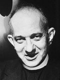

Selon Edward J. Ruppelt: Le père Hayden dirigeait le département d'astronomie à
l'Université de Georgetown. Je ne l'ai jamais rencontré par le Dr. Steve Possony venait
toujours le voir pour nos problèmes ovnis. Le père Hayden semblait être particulièrement intéressé par nos problèmes
et ne pourrait certainement pas être classé dans les moqueurs.
Ruppelt avait mal orthographié le nom de famille, qui est Heyden. En il quitte
l'Observatoire de Manille (Philippines) pour Georgetown et reçoit for outstanding
accomplishments and contributions to the popularization or advancement of the science of astronomy there. En
il prend la direction de l'Observatoire de Georgetown.
Il est nommé Membre Regular de la Société pour l'Imagerie Scientifique et la Technologie for outstanding achievement in imaging science or engineering en . Besides his keen interest in UFOs, he also studied the famous Piri Reis ancient maps. Il connaissait l'astronome Clyde Tombaugh ainsi que sa fameuse observation d'ovni.